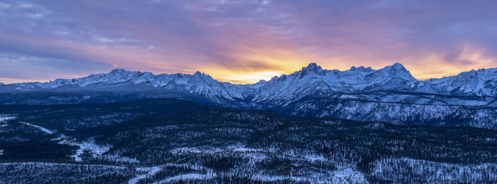

Placeholder — write the version of this you'd actually want a stranger to read.
A few things worth covering here: how you got into birds, where you're based, what you're chasing at the moment, and what you won't do to get a photograph. That last one matters more than people expect — a stated ethic is the most credible thing on a wildlife photographer's About page.
How I work
Placeholder. Unbaited, uncalled, no nest disturbance — if that's your practice, say so plainly here.
Gear
Placeholder. Worth one short paragraph, no more: people ask, but nobody came here for a kit list.